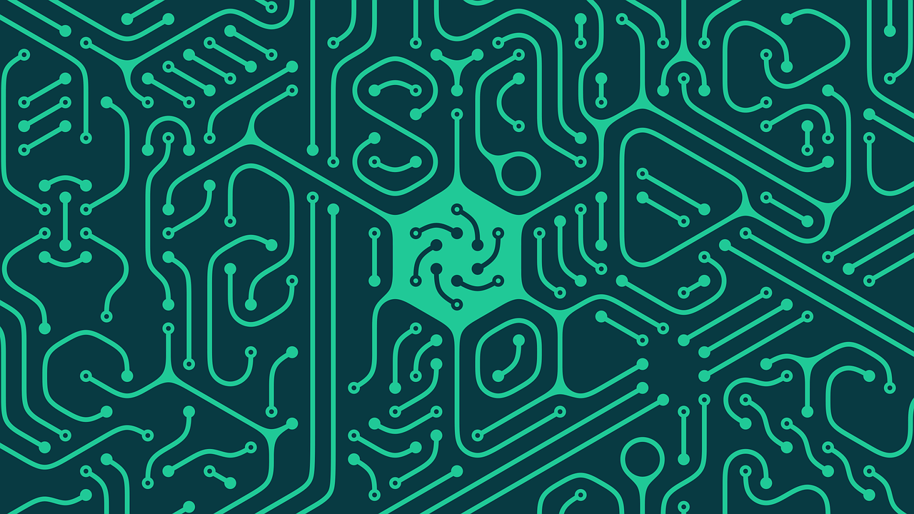

AI Use in Cybersecurity
How is artificial intelligence actually used in cybersecurity? It all comes down to looking at how artificial intelligence is used effectively. All systems use data. enormous amounts of data are fed into machine learning models to train them in various tasks. These models comprise the "machine" that is artificial intelligence.
Circuit Hexagonal Geometric Pattern - AcatXlo
Machine Learning
As data is fed into machine learning models, they learn to make distinctions and predictions. This has allowed existing systems to move from signature-based detection to anomaly detection. Anomaly detection is able to detect adversarial attacks never seen before. This gives systems a cutting edge threat detection system, cutting off the attack before it can even enter a network. In older systems threats had to match existing signatures known to anti-virus software, leaving systems open to new types of attacks. Keeping systems secure has become a paramount task. The average cost of a data breech in 2023 cost 4.45 million US Dollars ("Cost of a data Breach 2023"). By using AI based security systems, your providing the best protection to your systems.
Sources
"Cost of a Data Breach 2023." IBM - United States, www.ibm.com/reports/data-breach.